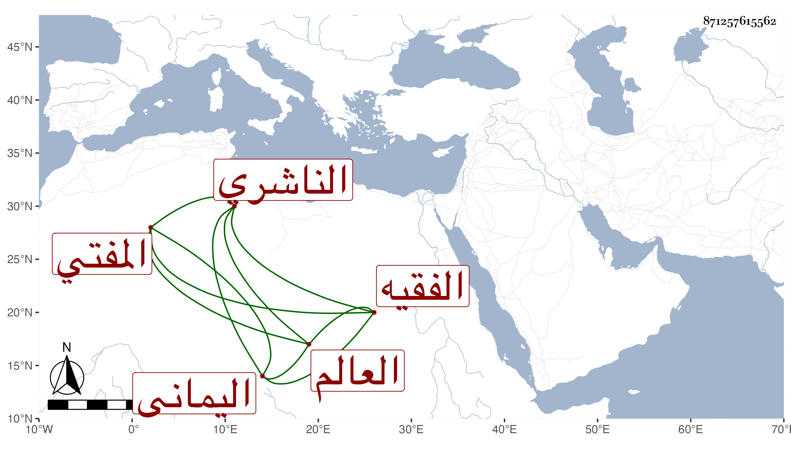

0902Sakhawi.DawLamic.ITO20230111-ara1.EIS1600.871257615562
Biography ID: 871257615562
414
أحمد بن محمد بن علي بن أبي بكر بن علي بن محمد بن أبي بكر بن عبد الله بن عمر بن عبد الرحمن بن عبد الله الفقيه العالم المفتي الشهاب أبو عبد الله أو قال العباس حفيد قاضي القضاة الموفق اليماني الناشري سبط عم أبيه الشهاب أحمد بن أبي بكر . ولد سنة خمس عشرة وثمانمائة وحفظ القرآن والشاطبية والحاوي وقرأه على كل من خاله القاضي الطيب والجمال محمد بن إبراهيم بن ناصر تلميذ ابن المقرئ وبرع فيه وصار يستحضره في الوقائع ويستخرج منه أكثر الفقه منطوقا ومفهما ثم قرأ الروضة على أولهما وأذن له في الإفتاء والتدريس فدرس وأفتى وقتا ، وكان قد اشتغل أولا بالقراءات السبع وقرأ عند أخيه المقرئ عبد الله القراءات وغيرها وكذا أخذ القراءت عن العفيف الناشري ، ثم عكف على الحاوي فنقله في أسرع مدة ، وهو جيد الحفظ له مع ذلك يد طولى في الجبر والمقابلة ومشى على طريقة حسنة من النسك ولعبادة كأخيه ومات في حياة أبويه سنة سبع وخمسين فاشتد جزعهما عليه وسافر أقاربه ونحوهم وقدرت وفاة أخيه صالح ثاني يوم موته ولم يكن كاسمه عند خاله فتمثل بما قيل :
| من شاء بعدك فليمت | فعليك كنت أحاذر |
